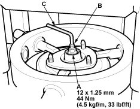

- Install the 12 mm nut (A) on the damper shaft (B). Hold the damper shaft with a hex wrench (C) and tighten the 12 mm nut to the specified torque.

- Remove the damper assembly from the strut spring compressor.
Damper/Spring Replacement (cont'd) |
18-5 |

|